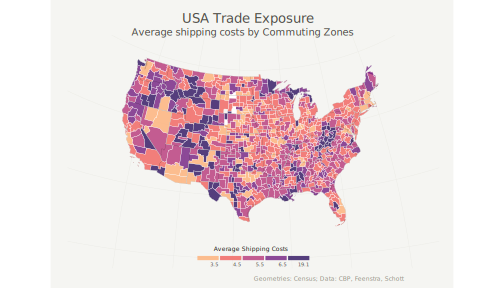

Import Competition and Household Debt (with Jean-Noël Barrot, Matthew Plosser, and Julien Sauvagnat) Forthcoming at the Journal of Finance First version: Summer 2016 This version: October 2022
Abstract: We analyze the effect of import competition on household balance sheets from 2000 to 2007 using individual-level data on on consumer finances. We exploit variation in exposure to foreign competition using industry-level shipping costs and initial differences in regions' industry specialization to study households use of credit markets in response to income shocks. We show that household debt increases significantly in regions where manufacturing industries are more exposed to import competition. A one standard deviation increase in exposure to import competition explains 30% of the cross-regional variation in household leverage growth, and is mostly driven by home equity extraction. Using data on individual expectations, we find that households in affected areas underestimate the persistence of income shock and lever up in order to smooth consumption. Our results highlight the role played by mortgage markets in absorbing displacement shocks triggered by globalization.
Download the working paper version of the paper Official version for the Journal of Finance Bibtex File Download the full set of replication files for the Journal of Finance CEPR Discussion Paper No. 12098 Federal Reserve Bank of New York Staff Report No. 821

Best paper in Corporate Finance at the SFS Cavalcade 2017 Our post on VoxEU Our post in MarketWatch Our post on the Liberty Street Economics Blog of the New York Fed
Home